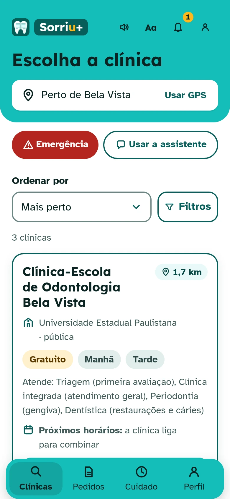
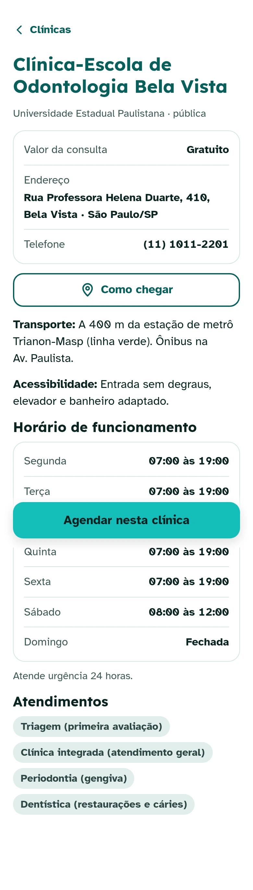
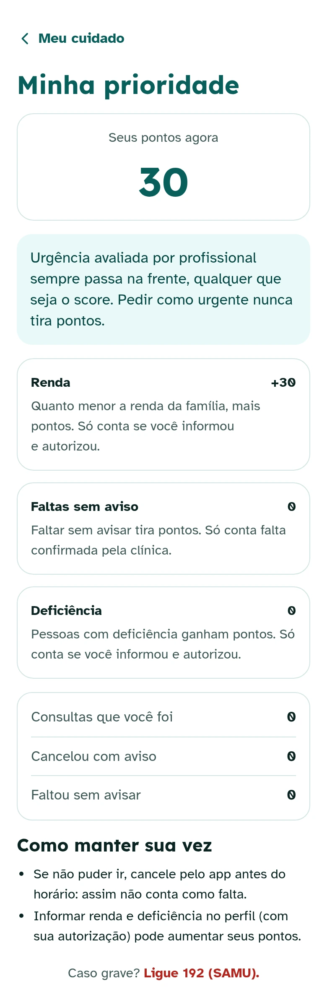
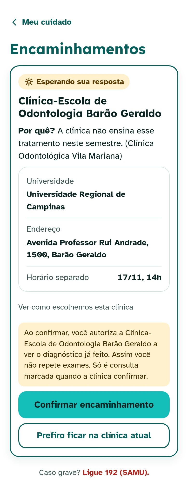
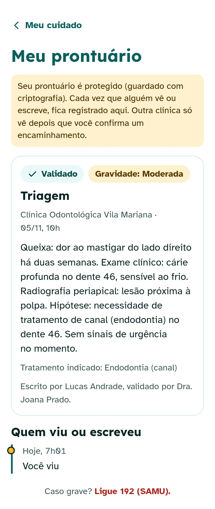
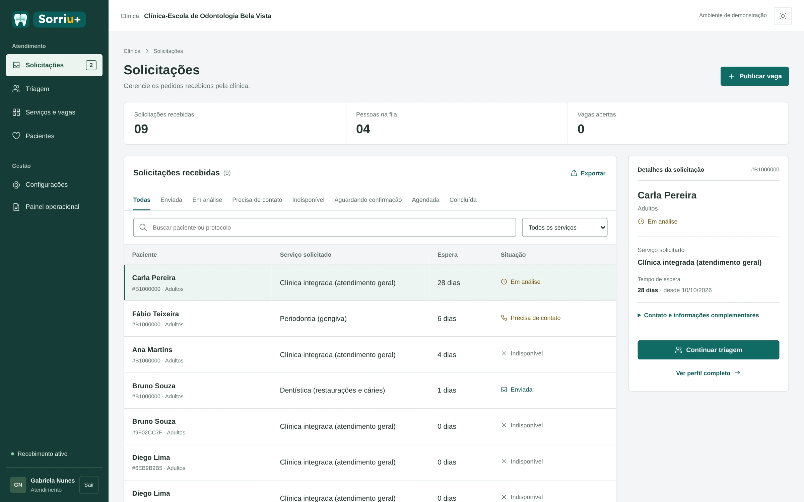
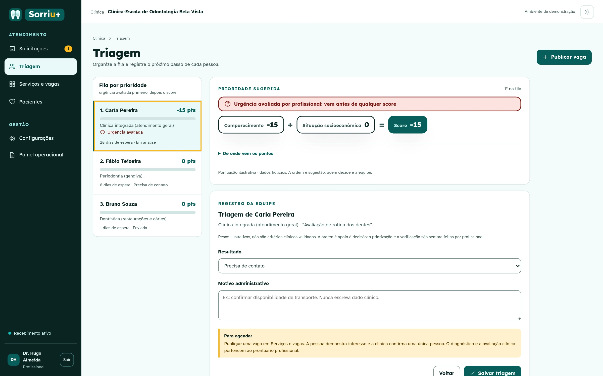
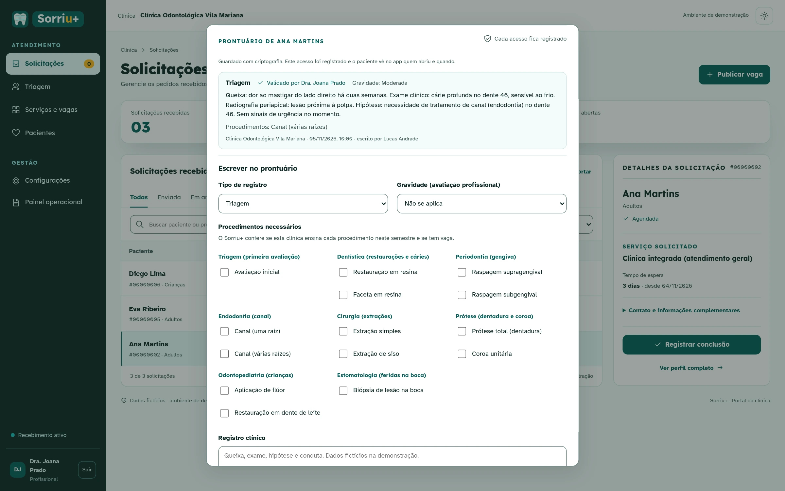

Saúde bucal para todos · clínicas-escola perto de você
Foolstack · HackaUSP 2026 · Saúde para todos
Imagine
Duas pessoas, a mesma cidade.
Guaianases
Clínica-escola
Paciente · 54 anos
Dona Cida
Dor de dente há 4 meses
Não pode pagar um dentista
Não sabe que a clínica-escola existe
Estudante · 3º ano
Rafael
Precisa de pacientes para se formar
O paciente de hoje faltou
66% dos que pensam em desistir nunca tiveram prática clínica
Nunca se encontram.
Não falta dentista. Não falta paciente. Falta a ponte.
66%: Carmo Filho et al., Revista da ABENO, 2023 (UFC, 74 calouros).
Personagens ilustrativos
Barreiras de acesso à saúde
Paciente na fila. Cadeira vazia.
0dias
de espera média pela primeira consulta odontológica especializada no SUS. Para um canal, até 170.
Barreira financeira e de tempo
32,9%das primeiras consultas odontológicas especializadas terminam em falta.
Barreira organizacional
Para quem tem baixa renda, saúde bucal ainda é privilégio.
Fontes: CEO de Pelotas, Epidemiol. Serv. Saúde, 2015 (95 dias); atenção secundária em Belo Horizonte, Ciênc. Saúde Coletiva, 2018 (32,9%).
Por que a barreira existe
Os dados estão espalhados.
Planilha
Caderno
Grupo de mensagens
Papel na recepção
Sistema próprio
E-mail
Trocou de clínica-escola? A ficha fica para trás: o paciente refaz o raio-X, conta tudo de novo e começa do zero.
E do lado do paciente
Quem precisa nem sabe que a clínica-escola existe.
Barreira de informação
Nossa solução · acesso conectado
Não falta oferta nem demanda. Falta conexão.
Um hub de clínicas-escola no celular do paciente
Prontuário único que acompanha o paciente
Cada clínica mantém o próprio sistema
FinanceiraGeográficaDe informação
Cida


1,7 km de você
Taxa social · R$ 15
Entrada sem degraus
Telas do protótipo · dados fictícios
Acesso justo · score
Fila justa: quem comparece avança.
Barreira organizacional
Comparecimento+Situação socioeconômica=Score
1234
Bruno0
Fábio0
Ana0
Cida0
Pontuação ilustrativa · dados fictícios
Cida

Urgência avaliada vem antes
Falta justificada é revista
Ninguém perde o direito
Telas do protótipo · dados fictícios
Acesso sem recusa · encaminhamento
Recusa vira encaminhamento.
Barreira da recusa
Cruza EspecialidadeGrade do semestreDistância
Mão dupla
Universidade A
Lotada
Universidade B
Cadeiras livres
O diagnóstico vai junto e o paciente confirma antes de ir. Nenhuma recusa vira desistência.
Cida

Telas do protótipo · dados fictícios
Continuidade do cuidado · prontuário
O histórico vai junto.
Barreira da continuidade
A informação é do paciente, não do prédio. Triagem, exames e laudo seguem com ele, e o aluno trata já na primeira consulta.
Hoje no protótipo · próxima etapa: prontuário único com consentimento
Cida

Registro de quem viu e quando
Outra clínica só vê com sua confirmação
Telas do protótipo · dados fictícios
Do lado da clínica-escola
Tudo num painel só.
1Pedidos chegam organizados
2Fila por prioridade, urgência antes
3Prontuário validado pelo professor



Telas do protótipo · dados fictícios
Ganha-ganha · a clínica-escola
A clínica economiza e fatura.
Base de pesquisa36–63 cadeiras por clínica-escolaUniCesumar 36 · PUCRS 52 · UPE 63~250 alunos por curso162,7 mil alunos ÷ 650 cursos1.200–1.500 pacientes/mêsUniban (SP) · FO-USP
−Economiza
Recepção automatizadaconfirmação, fila e ficha no sistema
até R$ 91 mil
Material estérilfalta deixa de abrir kit à toa
menos lixo
Cadeira e professor1 professor para cada 5 alunos em clínica (CNE/CES 230/2004): box vazio é professor parado
sem ociosidade
+Fatura
Horários recuperados40 cadeiras (abaixo das privadas pesquisadas) · 2.400/ano × R$ 15 de taxa social
R$ 0 mil
Alunos que não desistemevasão de 20% a 46% (UFRGS, UFPB): 3 de ~250 alunos × R$ 36 mil de mensalidade
R$ 0 mil
Por clínica de 40 cadeiras, por anoConservador (sem recepção, 1 aluno): R$ 72 mil · capacidade de 32 mil horários/ano
≈ R$ 0mil
Fontes: notícias UniCesumar, PUCRS e UPE (cadeiras); MEC via Bip, 2024 (alunos e cursos); Catraca Livre e FO-USP (pacientes/mês); CNE/CES 230/2004; Pravaler e Guia da Carreira (mensalidade R$ 2,5–3,3 mil); Newton Paiva (taxa social). Ganhos: estimativas do time.
Modelo de negócio · como a gente ganha
A clínica paga por cadeira. O paciente, não.
1 cadeira · 8 h por dia a cada 2 h, um paciente
4 por dia × 200 dias letivos0atendimentos por cadeira/ano
× 40 cadeiras privadas pesquisadas: 36–520horários por clínica/ano
Foolstack · HackaUSP 2026 Protótipo · dados fictícios
Experimente agoraProtótipo · dados fictícios
Demonstração
✓
9:41
Apêndice · para a banca
Perguntas que a gente espera.
1
LGPD e consentimento
Dado de saúde é dado sensível (Lei 13.709/2018). Cada acesso ao prontuário fica registrado: quem viu e quando. Outra clínica só vê depois que o paciente confirma.
2
Quem paga e quanto
A clínica-escola: R$ 20 por cadeira/mês + R$ 20 por horário recuperado ≈ R$ 57,6 mil/ano em 40 cadeiras. Retorno ≈ 4× no cenário base e 1,25× no conservador. O paciente não paga pelo app.
3
Alternativas e mercado privado
Hoje: planilha e o sistema de cada faculdade; o Sorriu+ liga a rede. Caso fora da rede pode ir a uma clínica privada parceira, se o paciente escolher. E o aluno de hoje é o dentista-cliente de amanhã.
4
Base e piloto
36–63 cadeiras por clínica (UniCesumar, PUCRS, UPE), ~250 alunos por curso, 1.200–1.500 pacientes/mês (Uniban, FO-USP). O piloto mede faltas, ocupação e encaminhamentos contra a base da clínica.
5
Por que a clínica-escola adota
Cadeira ocupada é aula dada, com menos material estéril perdido e fila sem ligação um a um. 66% dos que pensam em desistir ainda não tinham prática clínica (Revista da ABENO, 2023).
6
Protótipo × próximo passo
Já roda, com dados fictícios: busca, pedido, painel, fila com score, encaminhamento com confirmação e registro de acesso. Próximo: login real (hoje é demo), integração e piloto.
1–6 amplia uma resposta · Esc volta · Protótipo · dados fictícios
→ avança · ← volta · D abre o app · A apêndice · P apresentador · N notas · F tela cheia